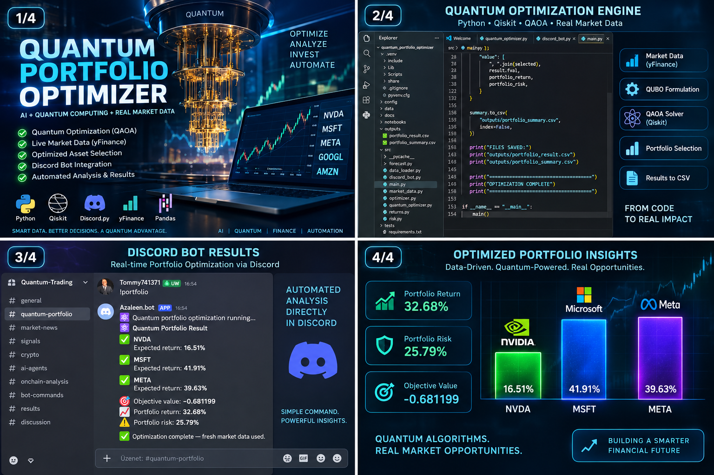

01 · DATA
Market Data
Historical prices, expected returns, volatility, correlation and covariance analysis.
A hybrid quantum-classical portfolio optimization research system combining real market data, quantitative finance, Qiskit and QAOA to explore optimized asset selection.
Classical finance handles data and risk analytics while the quantum layer explores candidate portfolio configurations.
Historical prices, expected returns, volatility, correlation and covariance analysis.
Risk-return evaluation, asset selection and portfolio metrics before quantum optimization.
Binary portfolio selection transformed into a QUBO model and explored with Qiskit.
Candidate allocations are compared using expected return, risk and portfolio objectives.

Research visualization showing the optimization workflow, QAOA/Qiskit layer and portfolio outputs.
Scale the optimization problem while preserving practical portfolio constraints.
Extend the model with changing market regimes and more advanced risk measures.
Benchmark simulated optimization against available quantum execution paths.
Connect portfolio outputs to automated research, reporting and decision-support workflows.